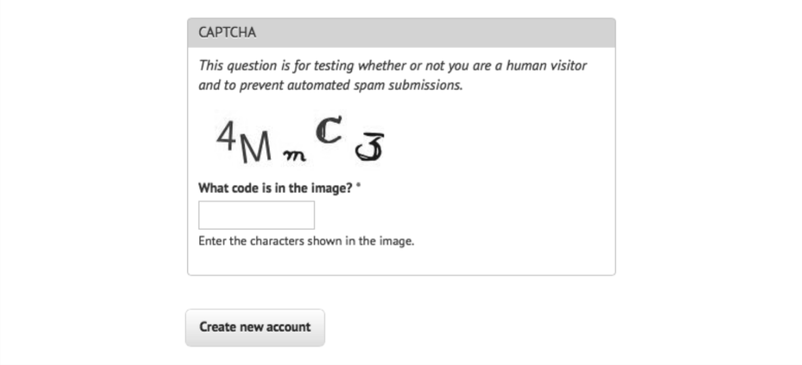

参考阅读：训练Tesseract
要使用 Tesseract 的功能，比如后面的示例中训练程序识别字母，要先在系统中设置一 个新的环境变量 $TESSDATA_PREFIX，让 Tesseract 知道训练的数据文件存储在哪里，然后搞一份tessdata数据文件，放到Tesseract目录下。
在大多数 Linux 系统和 Mac OS X 系统上,你可以这么设置:
$export TESSDATA_PREFIX=/usr/local/share/Tesseract在 Windows 系统上也类似,你可以通过下面这行命令设置环境变量:
#setx TESSDATA_PREFIX C:\Program Files\Tesseract OCR\Tesseract
大多数其他的验证码都是比较简单的。例如，流行的 PHP 内容管理系统 Drupal 有一个著名的验证码模块 https://www.drupal.org/project/captcha，可以生成不同难度的验证码。
举个例子：

那么与其他验证码相比，为什么这个验证码更容易被人类和机器读懂呢?
- 字母没有相互叠加在一起，在水平方向上也没有彼此交叉。也就是说，可以在每一个字 母外面画一个方框，而不会重叠在一起。
- 图片没有背景色、线条或其他对 OCR 程序产生干扰的噪点。
- 虽然不能因一个图片下定论，但是这个验证码用的字体种类很少，而且用的是 sans-serif 字体(像“4”和“M”)和一种手写形式的字体(像“m”“C”和“3”)。
- 白色背景色与深色字母之间的对比度很高。
这个验证码只做了一点点改变，就让 OCR 程序很难识别。
- 字母和数据都使用了，这会增加待搜索字符的数量。
- 字母随机的倾斜程度会迷惑 OCR 软件，但是人类还是很容易识别的。
- 那个比较陌生的手写字体很有挑战性，在“C”和“3”里面还有额外的线条。
- 另外这个非常小的小写“m”，计算机需要进行额外的训练才能识别。
用下面的代码运行 Tesseract 识别图片:
tesseract captchaExample.png output
我们得到的结果 output.txt 是: 4N\，，，C<3
创建样本库训练Tesseract
要训练 Tesseract 识别一种文字，无论是晦涩难懂的字体还是验证码，你都需要向 Tesseract 提供每个字符不同形式的样本。
首先要收集大量的验证码样本，样本的数量和复杂程度，会决定训练的效果。第二步是准确地告诉 Tesseract 一张图片中的每个字符是什么，以及每个字符的具体位置。
这里需要创建一些矩形定位文件(box file)，一个验证码图片生成一个矩形定位文件，也可以通过jTessBoxEditor软件来修改矩形的定位。
一个图片的矩形定位文件如下所示:
4 15 26 33 55 0
M 38 13 67 45 0
m 79 15 101 26 0
C 111 33 136 60 0
3 147 17 176 45 0
第一列符号是图片中的每个字符，后面的 4 个数字分别是包围这个字符的最小矩形的坐标 (图片左下角是原点 (0，0)，4 个数字分别对应每个字符的左下角 x 坐标、左下角 y 坐标、右上角 x 坐标和右上角 y 坐标)，最后一个数字“0”表示图片样本的编号。
矩形定位文件必须保存在一个 .box 后缀的文本文件中，(例如 4MmC3.box)。
博客园的一篇不错的训练教程：http://www.cnblogs.com/mjorcen/p/3800739.html?utm_source=tuicool&utm_medium=referral
前面的内容只是对 Tesseract 库的字体训练和识别能力的一个简略概述。如果你对 Tesseract 的其他训练方法感兴趣，甚至打算建立自己的验证码训练文件库，推荐阅读 Tesseract 官方文档：https://github.com/tesseract-ocr/tesseract/wiki，加油！